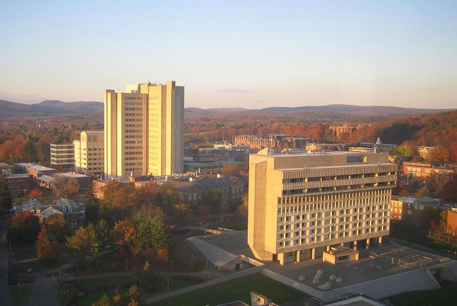
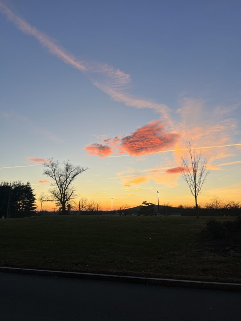

Exercise 4: Using Images
Public Domain Image
I chose this image of UMASS because it represents my educaitonal environment and reflects my current place as a student.

Creative Commons Image
I selected this technology-themed image after searching for "computers", I thought it was kinda funny.
My Own Photo
This is a photo I took myself, I wanted to add something personal that shows the way I see our campus through my eyes.
